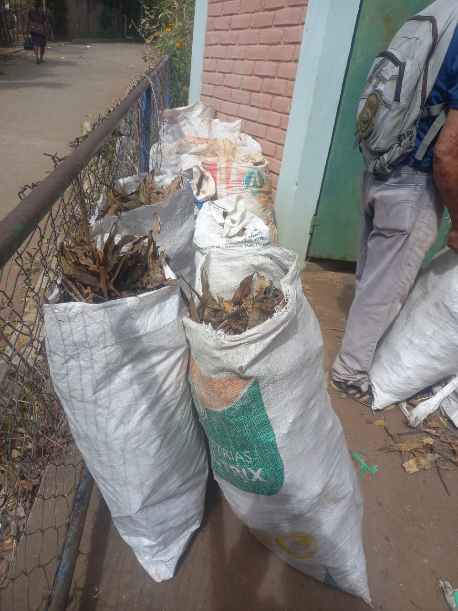

Recolección
Acopio de hojas secas y otros materiales vegetales disponibles en la comunidad.
Tierra Fértil transforma hojas secas y otros residuos vegetales mediante compostaje comunitario para recuperar materia orgánica, mejorar el suelo y demostrar que un recurso desaprovechado puede convertirse en una oportunidad ambiental y productiva.
En la comunidad Palo Negro, distrito de Coatepeque, Santa Ana Este, la acumulación de hojas y residuos vegetales representa un problema para las familias, especialmente en sectores donde la disposición de estos materiales es limitada.
Tierra Fértil propone aprovechar este material mediante compostaje, reduciendo su desperdicio y transformándolo progresivamente en materia orgánica útil para el suelo.

El proyecto documenta cada etapa para evaluar el proceso, aprender de la experiencia y generar una metodología que pueda mejorarse y replicarse en otras comunidades.
Acopio de hojas secas y otros materiales vegetales disponibles en la comunidad.
Organización del área y preparación de los materiales antes de iniciar el compostaje.
Manejo del material mediante humedad, aireación, volteo y seguimiento de su transformación.
Maduración, trituración y tamizado para obtener un material más uniforme y aprovechable.
Uso del material obtenido para evaluar su aplicación en suelo y pequeñas experiencias de cultivo.
El proyecto busca que la comunidad participe en la recolección, manejo y aprovechamiento de los residuos vegetales. Más que producir compost, Tierra Fértil pretende fortalecer conocimientos prácticos sobre suelo, materia orgánica, manejo responsable de residuos y producción sostenible.
Fundación El Umbral del Oasis documenta el desarrollo de Tierra Fértil mediante fotografías, registros de campo, seguimiento del proceso y resultados obtenidos. Esta información permitirá evaluar lo que funcionó, identificar mejoras y estudiar la posibilidad de replicar la experiencia en otras comunidades.
← Volver al sitio principal